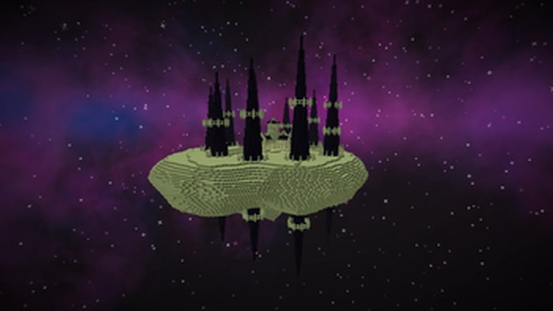

Mods
Everything on this page I installed and played. If a mod broke my world or ate my frame rate, it is not here. Click a card for the download page.
Showing 16 of 16 entries.
Install first

Sodium
My old laptop cannot run a modpack without it. With it the frame rate roughly doubles. Install this before anything else.
Must have Performance
Lithium
Optimises game logic and memory. Same family as Sodium. Install both and stop thinking about performance.
Must have Performance
JourneyMap
Minimap that records terrain as you walk and lets you drop waypoints. Without it I lose my house after about two hundred blocks.
Useful Map
AppleSkin
Shows the actual numbers behind the hunger bar so you stop guessing which food is worth eating. Small thing, use it every day.
Useful InterfaceShaders

BSL Shaders
The one I used longest. Warm colours, even brightness, good for building. A 1050 Ti runs it, which is what my old machine has.
Shaders Mid-range
Complementary Reimagined
Best balance of looks and performance that I have tried. Colours look real, leaves move. This is what runs now, on a 1060.
Shaders Mid-high
Sildur's Vibrant Lite
For weak machines. Several quality levels and the lowest one runs on integrated graphics. That is what my laptop uses.
Shaders Low-end
SEUS Renewed
Still the prettiest water in the game. Also brutal. My frame rate drops to about 20 so it only goes on for screenshots.
Shaders High-endContent

Twilight Forest
A whole dimension stuck in dusk with nine bosses in a fixed order. Took me almost three weeks to finish. The 4.9 update added villages.
Dimension Bosses
Epic Fight
Replaces the swing-spam combat with stances, dodges and combos. With Twilight Forest it turns the boss fights into the best part of the mod.
Combat Framework
Create
Gears, belts, shafts. I spent a weekend on an automatic sugar cane farm and it was worth it. Building machines that actually move is a different kind of fun.
Automation Machines
YUNG's Better End Island
Rebuilds the end island: new pillars, a different spawn layout, a bell tower that calls the dragon. The walk to the end city stops being boring.
Rework The EndHardcore

100 Days of Zombies
Zombies evolve every ten days. By day forty they build bridges and walk through fire. I lasted forty days and then stopped going outside at night.
Hardcore Zombies
SlashBlade
Katana mod. The swords level up as you use them and the combos are better than most action games. I opened a separate world just for the blade and ground out the kills for the demon one.
Combat Weapons
Advent of Ascension
Over twenty dimensions and a lot of mobs I cannot name. If vanilla bores you this is months of content. I have not finished it and probably will not.
Large Dimensions
RLCraft
You get thirsty. You break bones falling two blocks. Something wakes you up in the night and kills you. Uninstalled after a day, but if you like suffering it is very well made.
Brutal Modpack